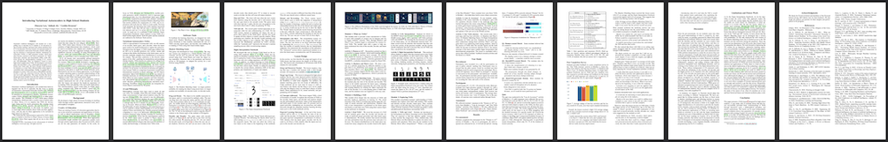
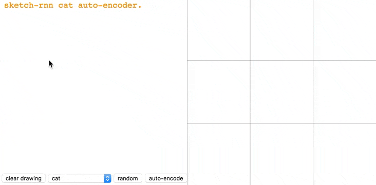
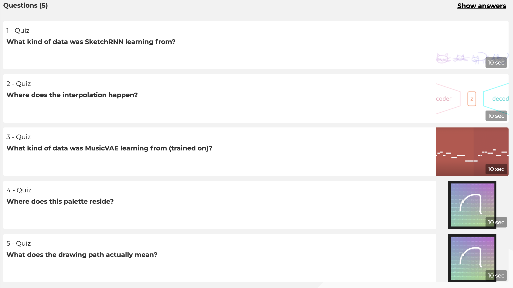

Introducing Variational Autoencoders to High School Students
Paper & Video Walkthrough
Generative Artificial Intelligence (AI) models are a compelling way to introduce K-12 students to AI education using an artistic medium. VAEs' latent-space structure and interpolation ability could effectively ground the interdisciplinary learning of AI, creative arts, and philosophy. Thus, we designed a lesson to teach high school students about VAEs.
Module 1: What are VAEs?
This module aims to provide a basic introduction to VAEs. It starts with examples of creative arts by humans and AIs to trigger students' curiosity. Then, through Shadows and Plato's Cave, students begin to understand the essence behind VAEs. The module ends with a game to help students understand the roles of the encoder, decoder, and latent space.
Shadow Matching Game
[Source Code]
Module 2: Building a VAE
This module dives deeper into the structure of VAEs and provides hands-on experience in training AI. The actual structure of the VAEs is revealed and touches upon the concepts of neural networks and distributions. Students then look at how interpolation is performed on the latent space and finally re-train their own VAEs using their custom digits on the notebook we designed.
Digits Interpolation Notebook
(Please click Open in Colab to see the UI feature)
Module 3: Exploring VAEs
This module consolidates students' understanding of VAEs. Students first explore tools built with modern VAE models and identify encoder, decoder, latent space. Then, students take a quiz to recall what they have learned. The lesson concludes with the roadmap of their learning and guides a artful and philosophical discussion surrounding VAEs.

SketchRNN
Assessment
We collected students' responses in the "Human or AI?" activity from Module 1, "Loss & Accuracy!" and "Our VAEs Journey" activities from Module 3. We also collected students' interpolation work in the Digits Interpolation Notebook and comments throughout the session.
Quiz
Pre-assessment
Post Completion Survey
Citation
MLA
Lyu, Zhuoyue, Safinah Ali, and Cynthia Breazeal. "Introducing Variational Autoencoders to High School Students.” Proceedings of the AAAI Conference on Artificial Intelligence. 2022.
BibTeX
@inproceedings{lyu_Ali_Breazeal_2022,
title={Introducing Variational Autoencoders to High School Students},
journal={Proceedings of the AAAI Conference on Artificial Intelligence},
author={Lyu, Zhuoyue and Ali, Safinah and Breazeal, Cynthia},
year={2022}
}